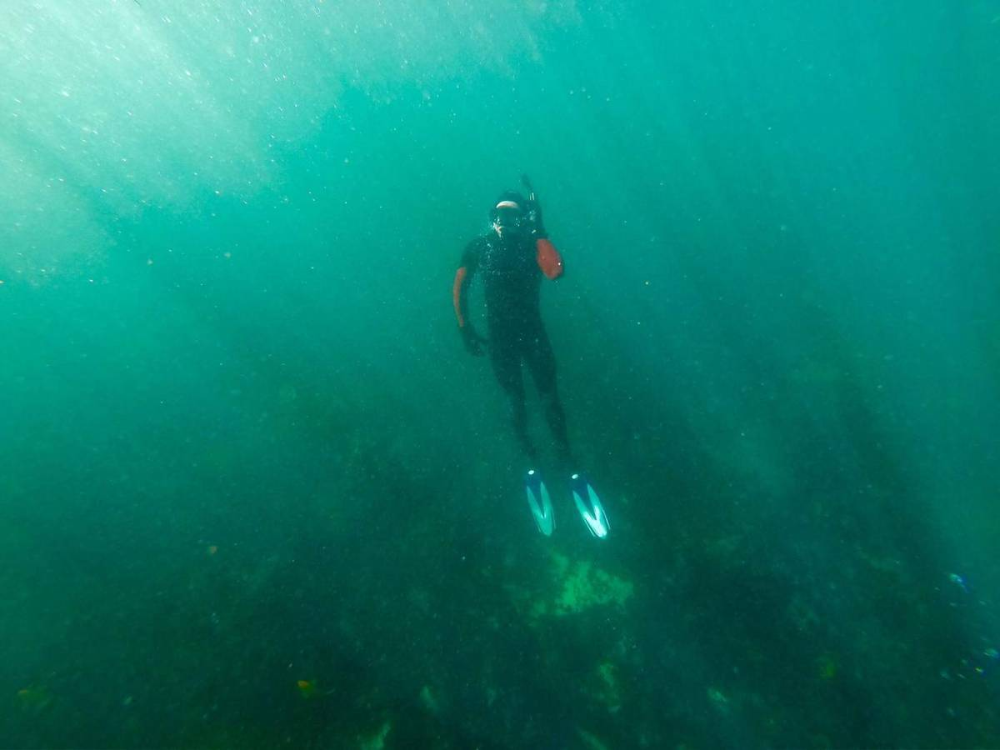
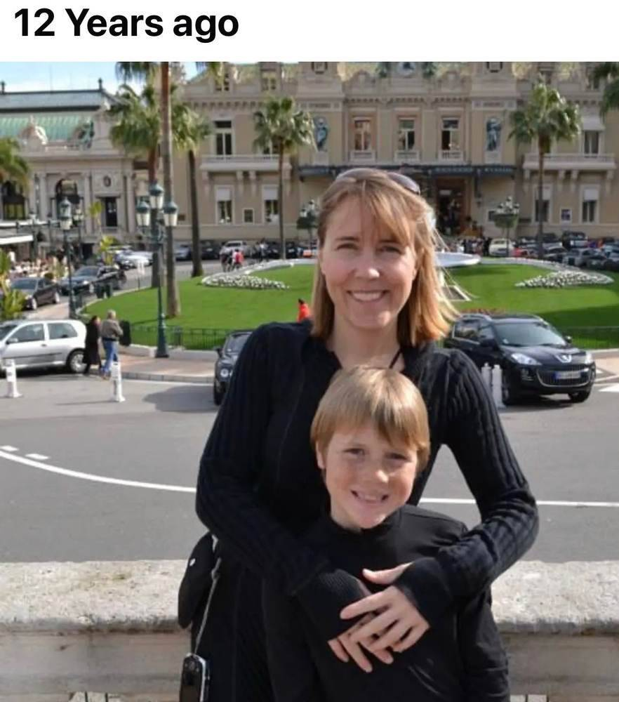
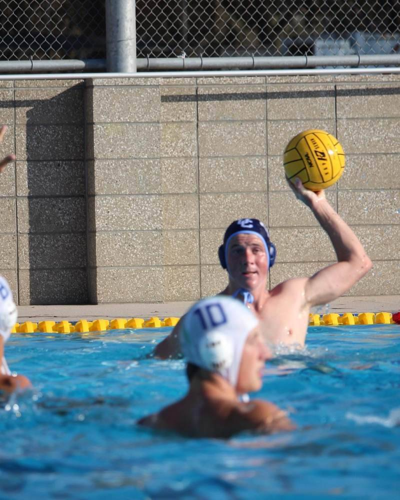
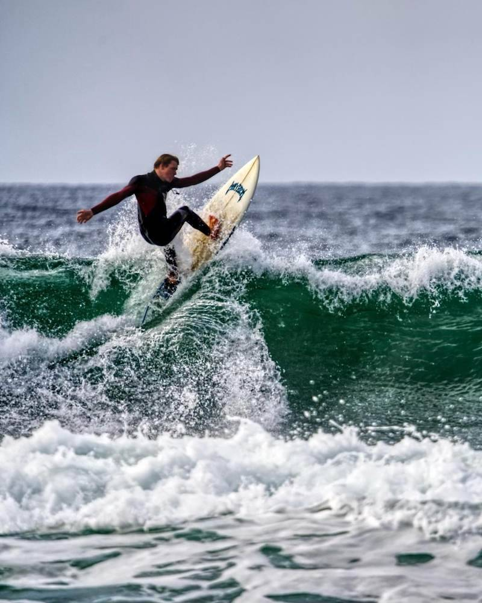
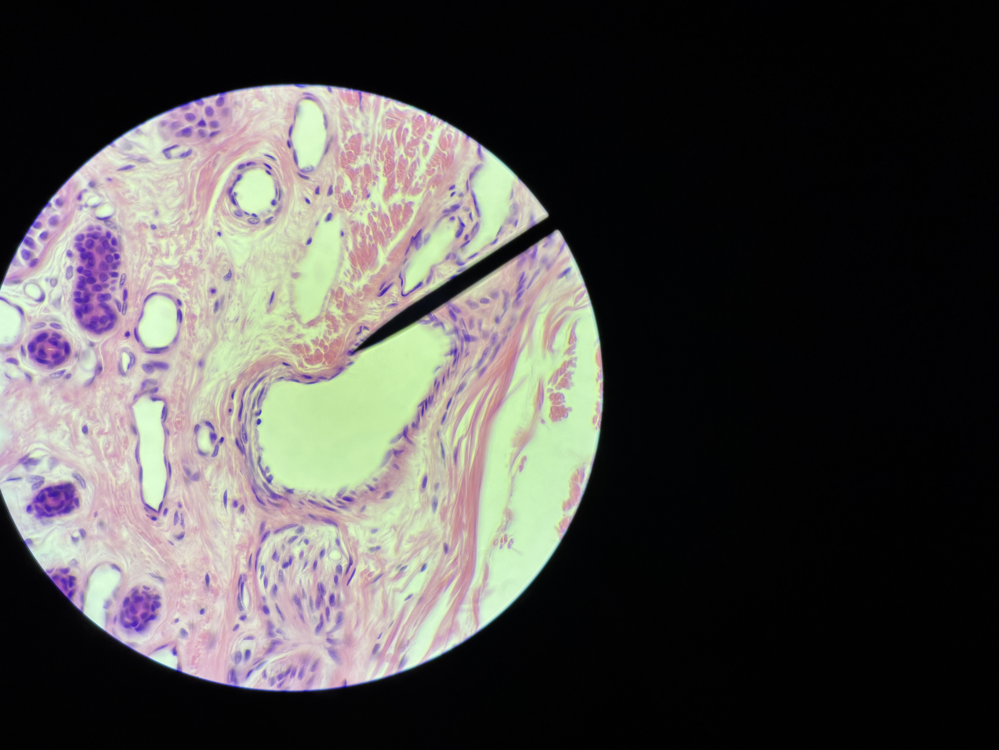
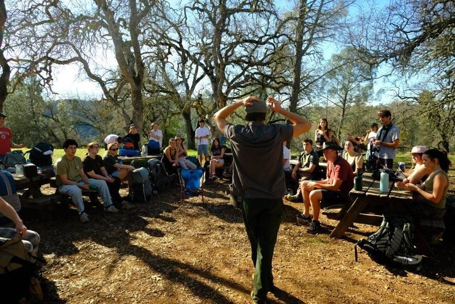
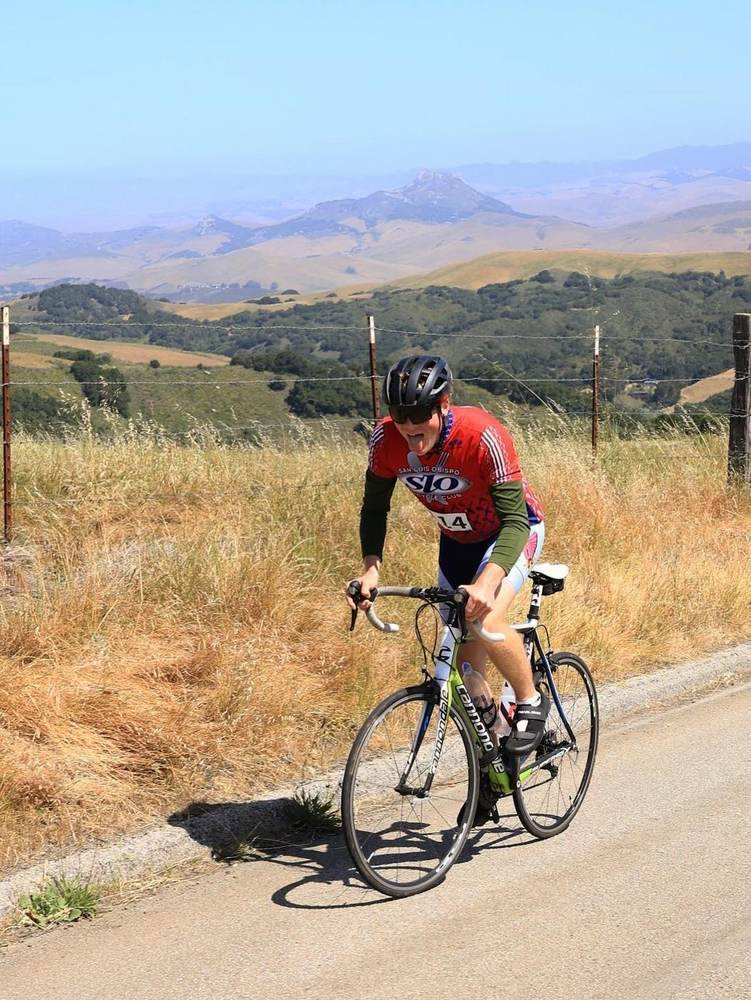
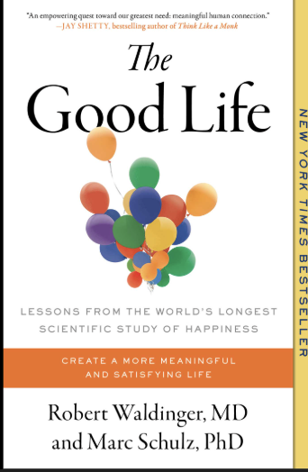
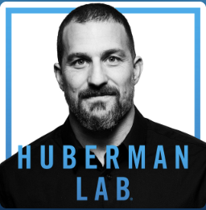
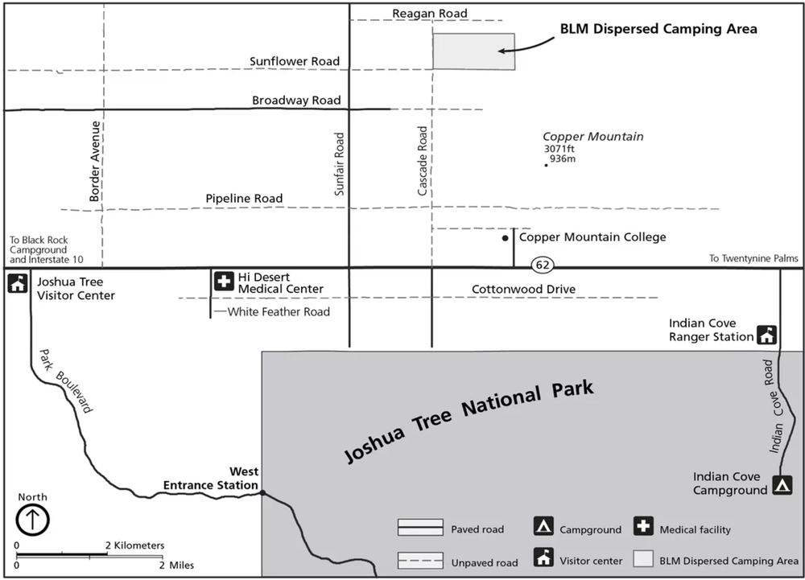

Built on good
foundations.
Biomedical engineering student at Cal Poly SLO, interested in how environment and community shape human performance.
The ocean and forest have taught me similar lessons — stay calm, keep learning, keep momentum moving forward.
Right now I'm exploring the intersection of engineering, psychology, and outdoor leadership.

Born by the sea
Momentum builds.Foundation years — Cádiz, Spain
Born in San Diego, raised in Spain through elementary school. Full cultural reset — new language, new environment, total adaptation. Learning Spanish and finding belonging laid the foundation early.

High school — becoming who I wanted to be
Community builder first. Team captain for water polo and golf, four years of competitive soccer, leadership through ASB. Learning how culture, energy, and leadership shape a team.

Ocean years — responsibility
Lifeguard, swim instructor, surf instructor, diver. When things go wrong in the water, they go wrong fast. Learned calm decision-making, accountability, and trust under pressure.

Cal Poly — engineering the human experience
Biomedical engineering, research, and a growing pull toward psychology, neuroscience, and performance. Understanding people through both engineering and lived experience.

Field Studies Club — leadership at scale
From leading trips to building systems. Mentoring leaders, organizing large expeditions, and expanding access to the outdoors and community.

The exploration phase — the call to adventure
Bikepacking routes, triathlons, endurance training, mountains, long hard days. Most alive when moving toward something difficult.

What I'm up to now
Small signals of direction.The Good Life
"Relationships are the number one predictor of happiness."

Huberman Lab
Cool studies on the science behind performance.

The next trip
Probably leading a huge group of outdoorsy folf to some BLM land in Joshua tree to go climbing.
